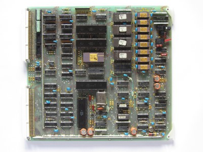
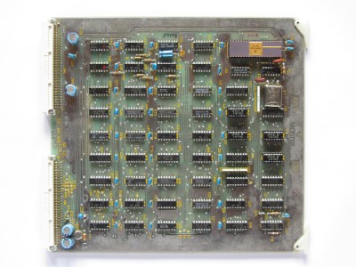
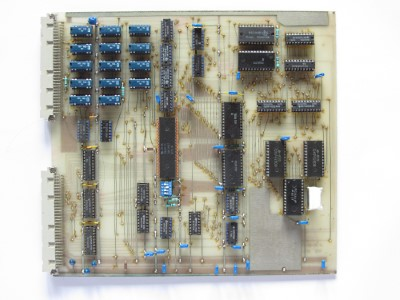
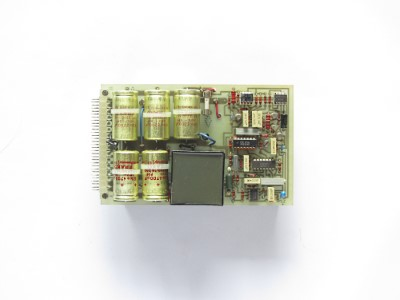
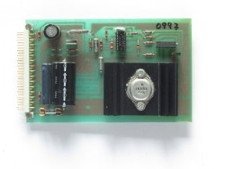

This Computer was a Microcomputer Mevelopment Systems called "SYS-80FT" made by Mostek and manuafactured in 1979. It is the European Version of the AIM-80F sold in America. Apparently both Computers werent very popular, there is a very limited amount of Information about this Computer on the Internet. I found a few catalogs that had Information about the Boards, but also one about the System. Also some small advertisements, but sadly I wasnt able to find a price for how much this System was sold at. Here are a few Pictures:
The System I own is equippped with a Monitor, Keyboard, EPROM-Programmer and a bunch of Floppy Disks. The Computer uses Eurocards with two 64-pin Connectors in the back, the bottom one is connected to a backplane which conects to all other cards and the top one is individually wired to the ports in the back or the floppy drives. The following Cards are currently installed:
| Name |
Description |
Specs |
Picture |
| OEM-80E |
This is the brain of the Computer, its essentially a
single-board-computer. It has a bunch of useful
functions like a user EPROM socket, a halt indicator
and a switch to change the the start adress, either
from zero or from the EPROMs that handle the Monitor
and Operating System. |
Z80 CPU
16K DRAM
4K ROM
110-9600 baud serial Interface
4 8-bit parralel ports
Z80 CTC with 4 counter/timer channels
Halt Lamp
Restart start position switch |
 |
| RAM-80BE |
This Card isnt very interesting, it only adds more RAM
to the System and four additional Parralel Ports. |
48K DRAM
4 8-bit parralel ports |
 |
| FLP-80E |
This card doesnt look like much, but it is
responsible for one of the key functions of the
system: the floppy drives. It uses the FD1771 as a
floppy controller and everything else is handled by
plain logic chips. |
soft sector compatible
compatible with IBM 3740 format
capable of up to 4 drives
capable of double sided drives
full sector buffering for data |
 |
| VDI-P |
This is a very unique board. Its essentially a whole
microcomputer which acts like a terminal. It uses the
Fairchild F8 microcontroller(s) (MK3850 & MK3851) and
communicates with the computer over a external serial
connecion made to the OEM-80E. It interfaces with a
normal ASCII keyboard (although I am unsure if the
DB-25 connector in the back of the computer is a
standard) and outputs video over RS170. |
24 lines x 80 char. display
5 x 8 dot matrix
110-9600 baud serial Interface
suports all 128 ASCII characters
capable of custom defined characters |
 |
| Custom V24 Board |
This Card was made by the schoool I found it at. I
assume this card was made to compensate the lack of
general purpose serial ports, because thecomputer
only offers four unassingned parralel ports. Its not
installed currently, because I dont have the need
for additional serial ports and dont know how to
operate it exactly. |
two V24 serial Interfaces |
 |
The power supply uses plug-in cards as well, although its not possible to exchange its position with another card because of the internal wiring. Also a quick overview:
| Voltage |
Description |
Specs |
Picture |
| +5V |
This is most certainly the heart of the Computer, it
supplys power to almost every part of the Computer. It
hasa giant heatsink in the back thats beeing heated by
a MJ11015 200W transistor, a IN6096 diode and a full
bridge rectifier. Besides of that, it also has a pretty
extensive regualting circuit. |
Volatge: +5V
Current: 15A |
 |
| ±12V |
This is a pretty compact circuit that uses the LM317 and
LM337 voltage regulators. It also has two LED's in the
front to indicate that the two 12V lanes are working.
-12V are used by the computer boards to generate -5V
for RAM and ROM. |
Volatge: +12V
Current: ~2A?
Volatge: -12V
Current: ~2A? |
 |
| +24V |
This card is really simple, it only has a few components
and a the 2N3055 used only has a small heatsink. The
transistor is rated up to 15A, but the circuit is most
likley not rated for such a high current. The +24V are
not accessible on the computer boards, and are only
used by the floppy drives. |
Volatge: +24V
Current: <15A? |
 |


{kind=link}
{kind=link}
{kind=link}
{kind=link}
{kind=link}